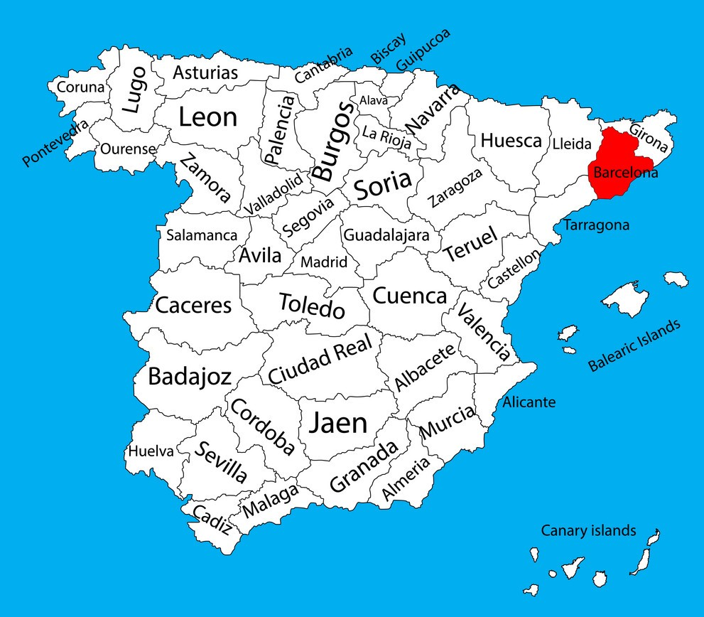

Barcelona
Informații
Barcelona este capitala Cataloniei, o comunitate autonomă din nord-estul Spaniei. Este de asemenea al doilea cel mai mare oraș al Spaniei, după Madrid. Barcelona se află pe coasta Mediteranei, 160 km sud de lanțul muntos Pirinei, care reprezintă granița cu Franța. Populația orașului este de aproximativ 1,6 milioane, iar a zonei metropolitane de aproximativ 3 milioane. Barcelona a fost locul în care s-au desfășurat Jocurile Olimpice de vară din 1992. În vara lui 2004 Forumul Internațional al Culturii s-a desfășurat în acest oraș.

Din 1997 Barcelona este divizată în 10 districte administrative, fiecare din acestea având propriul consiliu. Diviziunile administrative sunt în mare parte bazate pe diviziunile istorice astfel încât localitățile atașate Barcelonei din secolul XVIII încoace păstrează un caracter distinct și o administrație proprie. Aceste districte sunt uneori cunoscute și după numărul acordat fiecăruia. În fiecare district în mod informal sunt delimitate cartiere în total în număr de aproximativ 70.
| Țara | Comunitate | Comarcă | Guvernare | Suprafață | Densitate | Orașe |
| Spania | Catalonia | Barcelonas | Primar Ada Colau | 102.15km^2 | 15.748 loc./km^2 | 41 |